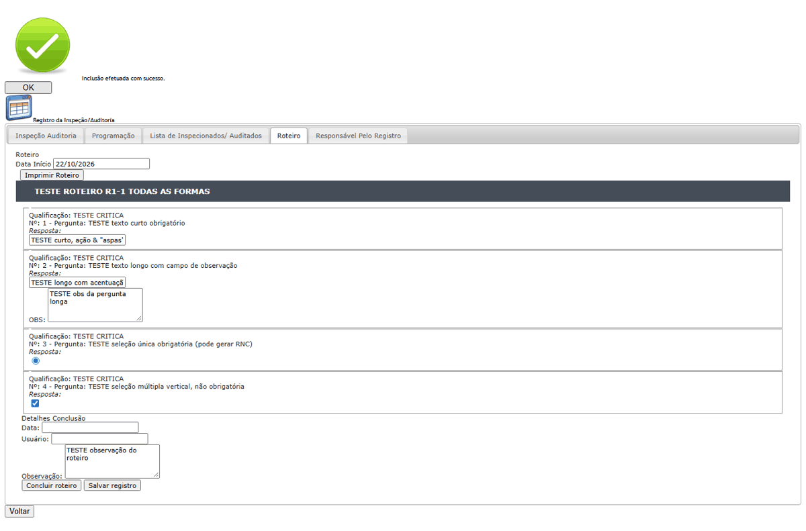
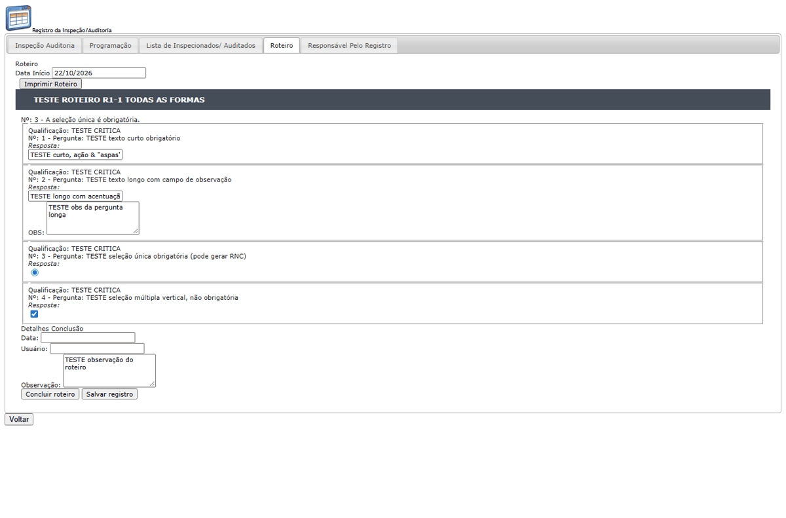
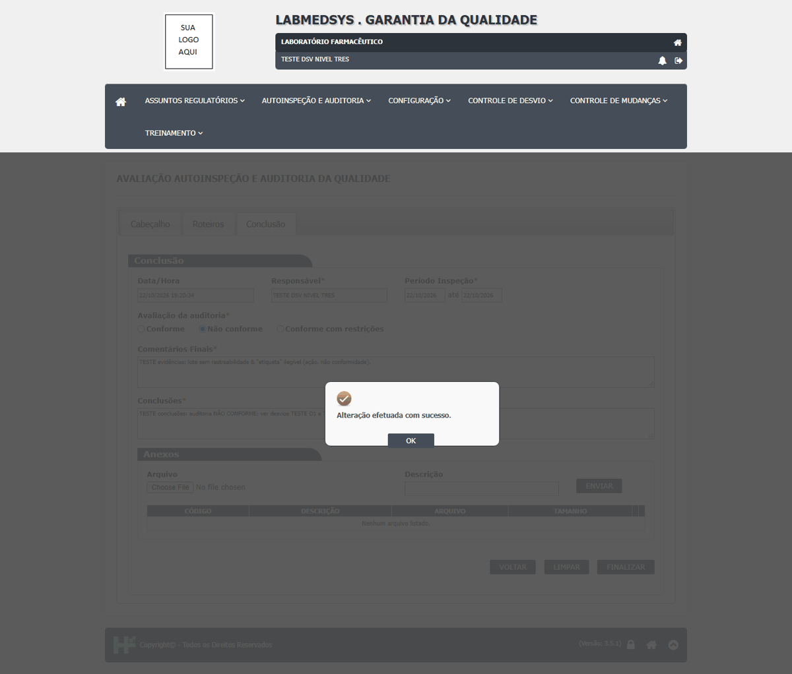
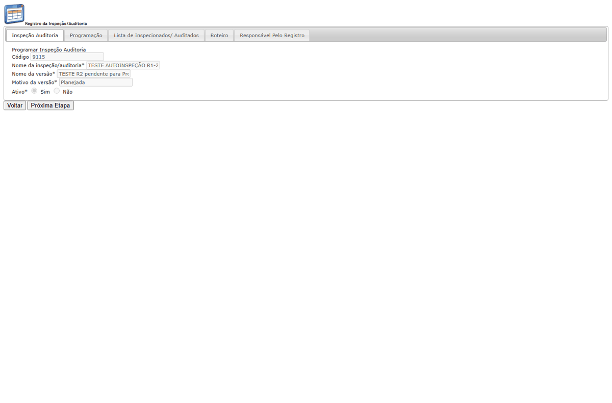
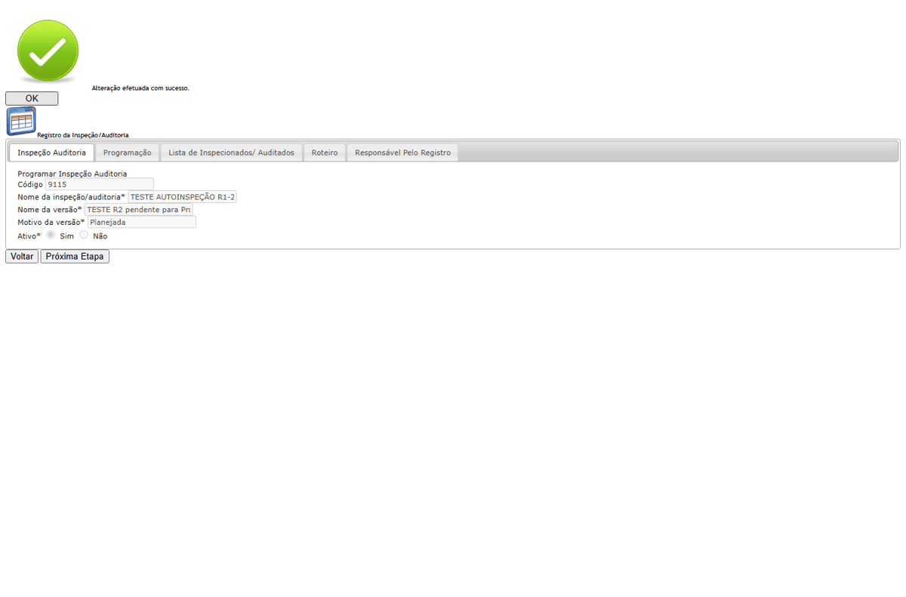
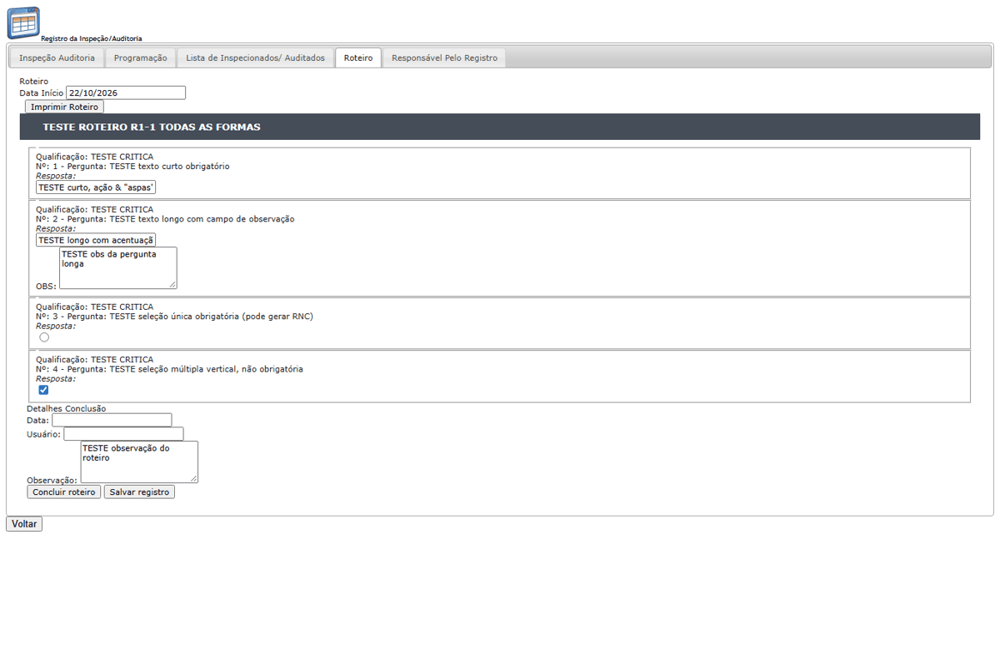
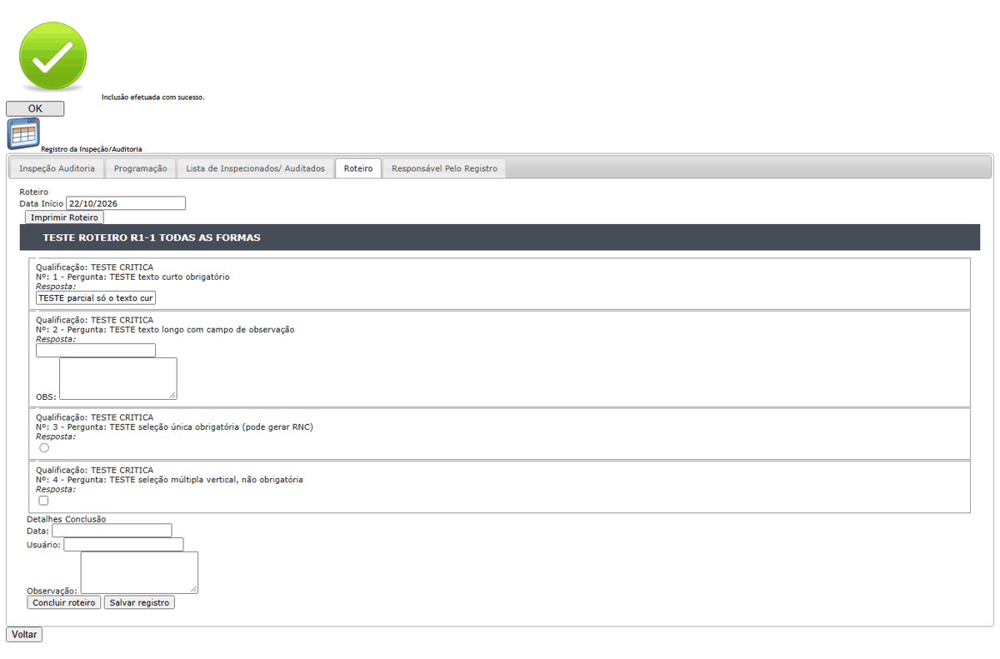

DV-GQ-113 · A seleção única marcada depois da primeira gravação não é gravada e o roteiro não pode mais ser concluído
A seleção única só grava quando é marcada na primeira gravação do roteiro. Se o inspetor salva um pedaço e volta, a única marcada depois não é gravada (ao reabrir, continua vazia) e a conclusão recusa com "Nº: 3 - A seleção única é obrigatória.". O texto curto, o longo e a múltipla atualizam normalmente. Repetido em duas programações e dois roteiros.
Como reproduzir o erro, passo a passo
- Responder só o texto curto e salvar.
- Voltar, marcar a seleção única e as demais respostas e salvar de novo.
- Reabrir o roteiro e tentar concluir.
Esperado
Gravar a resposta em qualquer gravação.
Obtido
A seleção única volta desmarcada e a conclusão é recusada.
Evidência (captura da tela)


DV-GQ-101 · "Imprimir Roteiro" e o PDF da avaliação saem sem as respostas
"Imprimir Roteiro" mostra as perguntas e deixa "Resposta:" vazio, mesmo com respostas salvas. O PDF da avaliação também não traz as respostas.
Como reproduzir o erro, passo a passo
- Salvar respostas e imprimir.
Esperado
Respostas impressas.
Obtido
"Imprimir Roteiro" mostra as perguntas e deixa "Resposta:" vazio, mesmo com respostas salvas. O PDF da avaliação também não traz as respostas.
Evidência (captura da tela)

DV-GQ-117 · "Próxima Etapa" continua visível numa programação já pendente de avaliação e responde sucesso sem mudar nada
No Visualizar do Registro de uma programação já em Pendente Avaliação o botão Próxima Etapa continua visível. O segundo clique pergunta "Confirma a operação?" e responde "Alteração efetuada com sucesso." sem mudar nada: o histórico tem uma só mudança de situação.
Como reproduzir o erro, passo a passo
- Clicar em Próxima Etapa numa programação já em Pendente Avaliação.
Esperado
Esconder o botão ou recusar.
Obtido
Sucesso sem nenhuma mudança.
Evidência (captura da tela)


DV-GQ-120 · Na seleção única, a opção aparece sem texto (só a bolinha) e o valor vai como "undefined"
Na seleção única o inspetor vê só a bolinha, sem o texto da opção, e o valor enviado vai como "undefined". Ele não sabe o que está escolhendo.
Como reproduzir o erro, passo a passo
- Abrir um roteiro com pergunta de seleção única.
Esperado
Mostrar o texto da opção.
Obtido
Opção sem texto.
Evidência (captura da tela)

DV-GQ-119 · Ao salvar o registro parcial, o sistema mostra uma lista de títulos de perguntas sem explicar o que é
Depois do "Confirma a operação?", aparece uma lista com os títulos de três perguntas (inclusive a já respondida e uma não obrigatória) e então "Inclusão efetuada com sucesso.". A lista não tem frase explicativa.
Como reproduzir o erro, passo a passo
- Responder só o texto curto de um roteiro e clicar em Salvar registro.
Esperado
Lista só do que falta, com uma frase.
Obtido
Lista de títulos sem explicação.
Evidência (captura da tela)

DV-GQ-122 · O texto longo do Registro perde a quebra de linha ao gravar
Um texto longo com duas linhas volta em uma linha só depois de gravado.
Como reproduzir o erro, passo a passo
- Responder um texto longo com duas linhas, salvar e reabrir.
Esperado
Manter as linhas.
Obtido
As linhas se juntam.
Evidência (captura da tela)